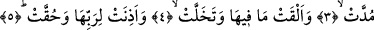
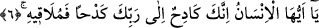

EY İNSAN!
SONUNDA O’NA VARACAKSIN
Bismillâhirrahmânirrahîm
1. Gök yarıldığı,
2. Rabbine kulak verip boyun eğecek hale getirildiği zaman,
3. Yer dümdüz edildiği,
4. İçinde bulunanları atıp boşaldığı
5. Ve Rabbini dinleyip O’na hakkıyla itâata mecbur kılındığı vakit (insanoğlu
yaptıkları ile karşılaşır).
6. Ey insan! Şüphe yok ki sen Rabbine karşı çaba üstüne çaba göstermektesin;
sonunda O’na varacaksın.
“Gök yarıldığı” yâni gök, arasından çıkan beyaz bir bulutla açıldığı “zaman...” Şu
âyet-i kerimede de bu olay açıklanmaktadır: “O gün gökyüzü beyaz bulutlar ile
yarılacak ve melekler bölük bölük indirileceklerdir.” (Furkan 25/25) Bu örnek âyette
yer alan “bâ” harf-i cerri “âlet” anlamı ifâde etmektedir. Bunun, âyetin anlamına katkısı
ise göğün bulutlar vâsıtasıyla yarılacak olduğudur. Bu bulutun içerisinde yukardan inen
melekler olacaktır. Ellerinde ise amel defterleri bulunacaktır. İşaret ettiğimiz bulutun
içinde yere inenlerin azap melekleri olmaları da mümkündür. Durum böyle olursa bu, en
şiddetli ve en feci azap demektir. Çünkü bu durumda hayır beklenen yerden; yâni gökten
azap inecek demektir. Böylece gökyüzü ilahi emirlerle meleklerin yere inmeleri için
yarılacak demektir.
Bazı âlimlere göre gökyüzü, bir tavana benzeyen göğün yere düşmesi ve parçalanması
için yarılacaktır. Bazılarına göre ise kıyametin korkusundan dolayı dayanamayıp
yarılacaktır. Nasıl yarılmaz ki gökyüzü Allah’ın kahır kabzası içinde bir hardal
tanesinden çok daha küçük bir durumdadır. Aslında yukarda verilen mânâların tümünü
bir arada düşünmeye engel herhangi bir şey yoktur. Çünkü gök önce Allah korkusuyla
yarılacak, sonra oradan melekler inecek, ardından gökyüzü parçalanıp, dağılarak, yok
olacaktır. Hz. Ali’den gelen bir rivâyete göre gökyüzü tam samanyolu çizgisinden